You should have hyper-v feature enabled to create a new virtual machine using hyper-v. If you dont have hyper-v feature enabled please refer article: How to add virtual machine feature in windows 10. After enable hyper-v you need to follow the following steps to create a new virtual machine.
1. Launch the hyper-v from start menu button.
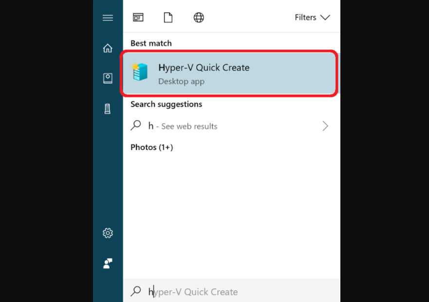
2. When hyper-v manager launch, look for the Actions tab and navigate to New -> Virtual Machine.
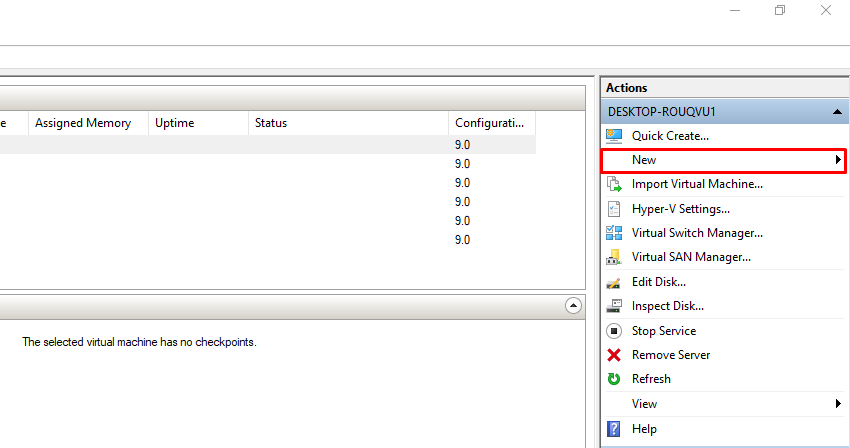
3. Click on Next on first windows
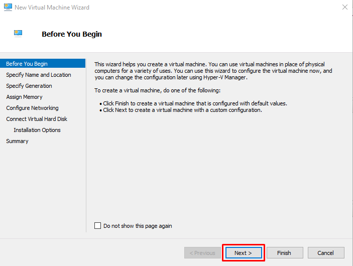
4. On Specify Name and Location window fill up the name of your virtual machine and select the drive location of your choice where you want to save the virtual machine files. Click Next
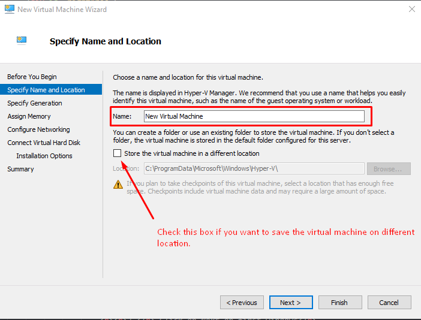
5. On Specify Generation window you need to choose the generation of the virtual machine according you hardware configurations. for more details please refer to the microsoft documentation for selecting virtual machine generation in hyper-v. But you can select the Generation 1 here to start and click on Next
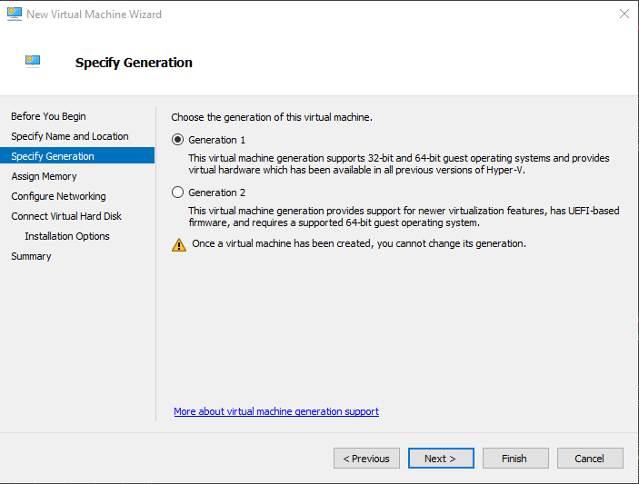
6. Further you will see the Assign Memory screen. Here you can assign the memory use by the virtual machine you are going to create. Note: When you the run the virtual machine this assigned memory will be from the actual RAM which is installed on your hardware device.
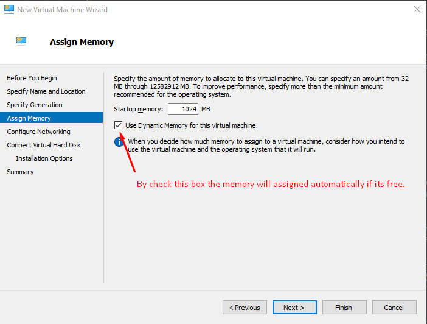
7. The next screen will be Configure Networking. Here you can select the network switch which you can use to specify which network switch the virtual machine will use to access internet and files between virtual network(you can change this later too). Just select the Default switch and click on Next button.
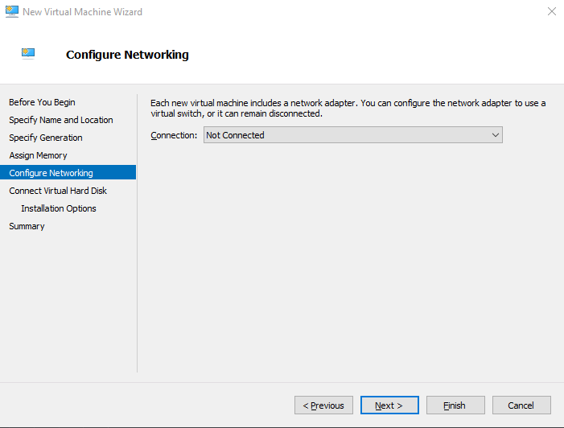
8. Next screen will be Connect Virtual Hard Disk.You can alot the space for using virtual machine on the hard drive of your computer. for e.g i have assigned 20GB here in below image
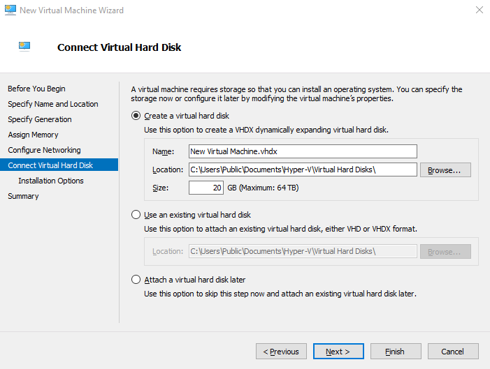
9. On Installation Options screen either choose "Install an operating system later" or choose "Install an operating system from a bootable CD/DVD-ROM" (here you can choose an iso file which is saved on har drive already. It could be any OS .iso). To download windows iso from web see the article how to download windows 10 iso file
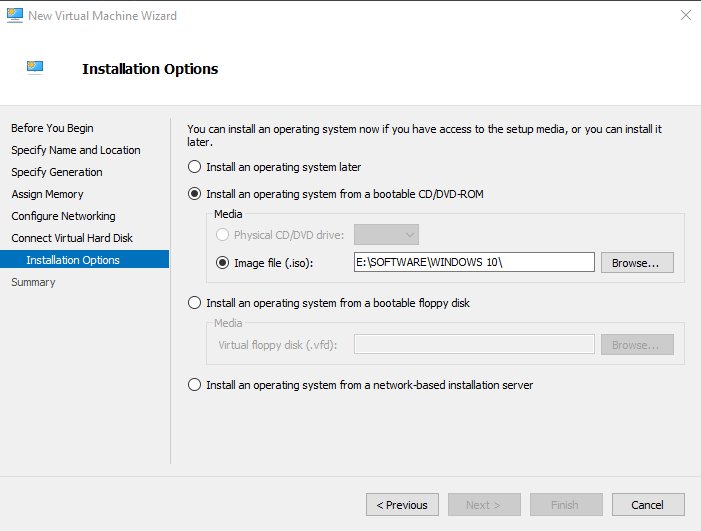
10. Click on next and on summary screen click finish. Your virtual machine will setup in a few moment
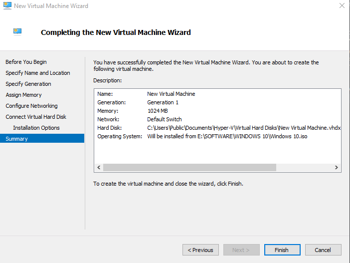
Once the process finish you will see the virtual machine in the Hyper-v manager screen listing. Just click on the newly created virtual machine and hit connect button on the on select machine tab visible at the right side of the hyper-v manager
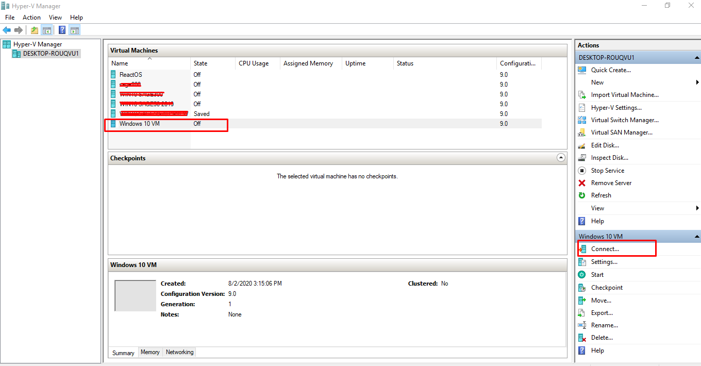
After click on connect the virtual machine screen will appear, press on the VM start button and your virual machine will start. At the very beginning it will install the windows or any choosed OS.iso like any standard OS installation. And once it will done you will be able to run a separate OS on your exising machine.